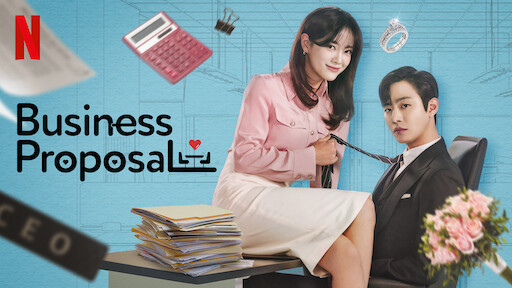
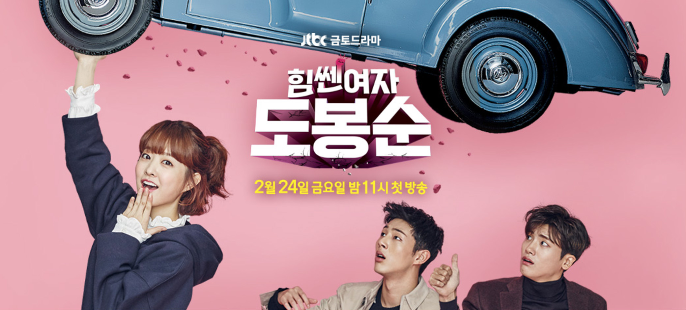

DORAMAS, K-Dramas
Drama coreano 한국드라마 ou nomeado também K-drama,Telenovela sul-coreana ou Dorama. É a designação dada aos dramas televisivos em língua coreana realizados pela Coreia do Sul. Possui principalmente o formato de minissérie, com características distintas que o diferencia das séries de televisão e das telenovelas feitas no ocidente, sendo contudo semelhante aos dramas televisivos realizados por outros países da Ásia.
Os dramas de origem coreana, historicamente, surgiram influenciados pelas novelas japonesas dos anos de 1950. Apesar da ditadura militar vigente na época e das restrições impostas em relação aos conteúdos, os doramas se tornaram parte essencial das transmissões das diversas outras redes de televisão na qual surgiram posteriormente.
Sua transmissão iniciou-se na década de 1960 e seu formato atual com um número total de capítulos que variam em média de 12 a 24 episódios, iniciou-se nos anos noventa, quando houve uma transformação das séries históricas tradicionais para este formato. Atualmente, tornaram-se extremamente populares ao redor do mundo, em parte devido a propagação da chamada onda coreana, mas sobretudo com provedoras de serviços de transmissão de séries e filmes, oferecendo legendas dos dramas coreanos em diversos idiomas.
Uma Advogada Extraordinária
Woo Young Woo (Park Eun Bin) é uma advogada de 27 anos no espectro autista. Criada pela seu pai solteiro, ela tinha apenas uma amiga na escola que a protegia dos colegas que praticavam bullying. Na vida adulta, Young Woo se tornou uma profissional excelente. Tendo um QI altíssimo, de 164, ela se formou como a melhor estudante da turma na prestigiada Universidade Nacional de Seoul. Devido à sua inteligência e memória fotográfica, ela conseguiu um trabalho em um grande escritório de advocacia se envolvendo com casos criminais incomuns e complexos. Por outro lado, emocionalmente, Young Woo não se dá muito bem com interações sociais
16 Episódios
Kill Me, Heal Me
O corpo humano é capaz de tudo para sobreviver a situações difíceis. Cha Do Hyun (Ji Sung) é um herdeiro da terceira geração de um negócio bem-sucedido que desenvolveu um transtorno dissociativo de identidade (antes conhecido como transtorno de personalidade múltipla) como consequência de vários eventos traumáticos que ameaçaram sua vida. Ele tenta retomar o controle de sua vida com a ajuda de Oh Ri Jin (Hwang Jung Eum), uma residente do primeiro ano de psiquiatria que o ajuda secretamente.
Mas o irmão gêmeo de Ri Jin, Oh Ri On (Park Seo Joon), é um escritor determinado a revelar as vidas sem escrúpulos dos ricos e começa a seguir Do Hyun. Será que Do Hyun conseguirá controlar sua mente antes que uma de suas sete personalidades o controle?
20 Episódios
Oh My Ghost
Esta é a melhor maneira de chegar ao pós-vida? Na Bong Sun (Park Bo Young) é uma mulher extremamente acanhada e tímida que trabalha como assistente de chef no Restaurante Sun. Ela nutre uma paixão secreta pelo grande chef Kang Sun Woo (Jo Jung Suk), mas não tem coragem para fazer nada a respeito. Mas Bong Sun tem a habilidade de ver fantasmas, em parte graças à sua vó, que era uma xamã.
Shin Soon Ae (Kim Seul Gi) é uma jovem mulher que morreu sem nunca ter experimentado um romance em sua curta vida. Ela está determinada a seduzir o máximo de homens possível e a perder sua virgindade, para que possa chegar feliz ao pós-vida. Quando Soon Ae conhece Bong Sun, ela encontra o instrumento perfeito para cumprir sua missão.
16 Episódios
Oh My Venus
Quando uma garota que ocupava o topo da hierarquia em matéria de aparência no ensino médio se transforma em uma mulher adulta que está em último lugar nesse departamento, é possível voltar ao topo? Kang Joo Eun (Shin Min Ah) era invejada por todas as garotas e desejada por todos os garotos no ensino médio por causa de seu lindo rosto e corpo arrasador. Apesar de vir de uma família pobre, Joo Eun estava determinada a ir para a faculdade de direito e se tornar uma advogada.
Aos 33 anos de idade, ela já alcançou seus objetivos profissionais e está em um relacionamento estável com seu namorado do ensino médio, Im Woo Sik (Jung Gyu Woon), há 15 anos. Mas ela se descuidou ao longo dos anos e agora está com sobrepeso, sendo frequentemente ignorada e esquecida pela sociedade e por seus colegas de trabalho.
16 Episódios
Hello Monster
Quando um assassino em série ataca mulheres que têm uma aparência semelhante, a Equipe Especial de Investigação Criminal do departamento de polícia enfrenta dificuldades. Enquanto a detetive de elite Cha Ji An (Jang Nara) e seus colegas examinam a cena do crime mais recente, o misterioso Lee Hyun (Seo In Guk) aparece e instantaneamente determina a marca registrada do assassino.
Hyun é um gênio em perfis criminais com formação em psicologia criminal que recebeu um e-mail anônimo que o fez vir dos Estados Unidos para investigar a cena do crime.
16 Episódios
Hotel del Luna
Bem no pujante centro de Seul, há um hotel estranho, do tipo que ninguém viu antes. Antigo além da conta, o prédio foi construído há milênios, uma evidência clara de que as coisas nem sempre são o que parecem. Quem toma conta deste hotel é Jang Man Wol (IU), uma alma gananciosa e desconfiada que passou os últimos mil anos atuando como diretora executiva do estabelecimento.
16 Episódios
To The Beautiful You
Uma menina fará tudo o que puder para conhecer o seu ídolo. Jae Hee está apaixonada por Tae Joon, um campeão no salto em altura. Ela descobre que a escola onde ele anda é uma escola só de rapazes e assim corta o cabelo curto e finge ser um rapaz para ser admitida nessa escola. Mas rapidamente se apercebe que tentar integrar-se com os rapazes e manter a sua verdadeira identidade não é nada fácil. Por quanto tempo é que vai aguentar este estratagema, e será que no fim vai valer a pena?
16 Episódios
Vincenzo
Vincenzo conta a história de Vincenzo Cassano (Joong-ki Song), um advogado coreano que mora na Itália desde os oito anos, após ter sido adotado como consequência de uma traição de gangue. Ele agora trabalha para uma família de mafiosos italianos, que vive sempre em pé de guerra com outras facções. Durante uma visita à Coreia do Sul, sua terra-mãe, Vincenzo decide se vingar daqueles que o fizeram sofrer no passado, travando uma perigosa batalha contra um cartel local que não pode ser punido nem mesmo pela lei.
Mas isso não atrapalha os planos de Vincenzo, que vai contar com a ajuda da implacável advogada Hong Cha-young (Jeon Yeo-bin) e seu estagiário Jang Jun-woo (Taecyeon).
20 Episódios
W
É possível viver no mesmo lugar, no mesmo período de tempo, mas em uma dimensão completamente diferente? Oh Yeon Joo (Han Hyo-Joo) é uma residente de cirurgia cardiotorácica do segundo ano. Seu pai, um famoso artista dos quadrinhos, desaparece subitamente um dia e, logo depois, a própria Yeon Joo é sequestrada por um homem estranho, coberto de sangue, e levada para outra dimensão. Kang Chul (Lee Jong Suk) é um medalhista de ouro olímpico em tiro esportivo e um empreendedor milionário.
Como será que seu mundo se interligará com a outra dimensão de Yeon Joo?
16 Episódios

Business Proposal
Em Pretendente Surpresa, Shin Ha-ri (Kim Se-jeong) tem uma paixonite por um colega de trabalho já há bastante tempo. No entanto, quando ela descobre que ele tem uma namorada, Ha-ri acaba se sentindo deprimida. Para desabafar sobre seus sentimentos, Ha-ri decide encontrar sua amiga Jin Young-seo (Seol In-ah), uma jovem de origem rica.
Ela pede para que Ha-ri se passe por ela em um encontro às cegas no qual ela não tem intenção de participar. Ha-ri aceita a proposta, mas para o seu espanto, o encontro é com Kang Tae-mu (Ahn Hyo-seop), ninguém menos do que o CEO da empresa onde ela trabalha
12 Episódios
Descendants of the Sun
Alguns relacionamentos estão destinados a acontecer, apesar dos desafios do tempo e do lugar. Yoo Si Jin (Song Joong Ki), líder da Unidade de Forças Especiais, conhece a cirurgiã Kang Mo Yeon (Song Hye Kyo) na emergência do hospital depois que Si Jin e seu segundo no comando, Seo Dae Young (Jin Goo), perseguiram um ladrão no dia de folga deles.
Si Jin imediatamente se sente atraído por Mo Yeon, e ele a convida para sair. Mas Si Jin constantemente é chamado para missões militares durante seus encontros com ela, e ambos percebem que têm pontos de vista conflitantes sobre a vida humana (ele matará para proteger seu país, e ela precisa salvar vidas a todo custo), e por isso decidem terminar esse relacionamento que mal havia começado.
16 Episódios
She Was Pretty
dois conhecidos se reencontram depois que suas vidas mudam completamente. Kim Hye-jin era uma linda jovem de família rica, mas depois que a editora de sua família vai a falência ela enfrenta sérios problemas.
Ji Sung-joon era um adolescente nada atraente, mas acaba se tornando um belo jovem adulto e engata uma carreira de sucesso como editor em uma revista. Depois de se reconectarem pela internet, os dois decidem se encontrar pessoalmente, mas insegura de sua aparência Kim Hye-jin decide pedir sua amiga para ir ao encontro de Ji Sung-joon fingindo ser ela.
16 Episódios

Strong Woman Do Bong-soon
Bong-soon (Bo-young Park) não é uma mulher comum. Ela é uma mulher que possui força sobre-humana, que pode esmagar objetos com as próprias mãos quando os segura com muita força. Embora Bong Soon anseie por ser uma mulher elegante e delicada pela qual os homens se apaixonam, ela não pode renunciar seu poder.
Felizmente, este é o atributo especial permite que ela consiga um emprego como guarda-costas de Ahn Min Hyuk, o herdeiro com tendências excêntricas que administra uma empresa de jogos.
16 Episódios
Weightlifting fairy Kim Bok Joo
Aos 21 anos de idade, Kim Bok Joo (atuada por Lee Sung Hyuk), estudante de halterofilismo em uma universidade de educação física, é uma garota que corre muito atrás de seus sonhos e objetivos. Embora pareça ser extrovertida, ela é sensível às críticas.
Por coincidência, ela conhece o seu colega de natação Jung Joon Hyung (atuado por Nam Joo Hyuk), um gênio da natação não tão sortudo, e os dois começam uma história de amor super romântica.
16 Episódios
Goblin
Kim Shin (Gong Yoo) é um goblin imortal responsável por proteger as almas dos humanos. Ele está decidido a perder sua imortalidade, mas um goblin só pode pôr fim à sua vida se ele se casar com uma pessoa.
É por isso que agora ele investe todos os seus esforços para conquistar a bela Ji Eun-tak (Kim Go-eun).
16 Episódios